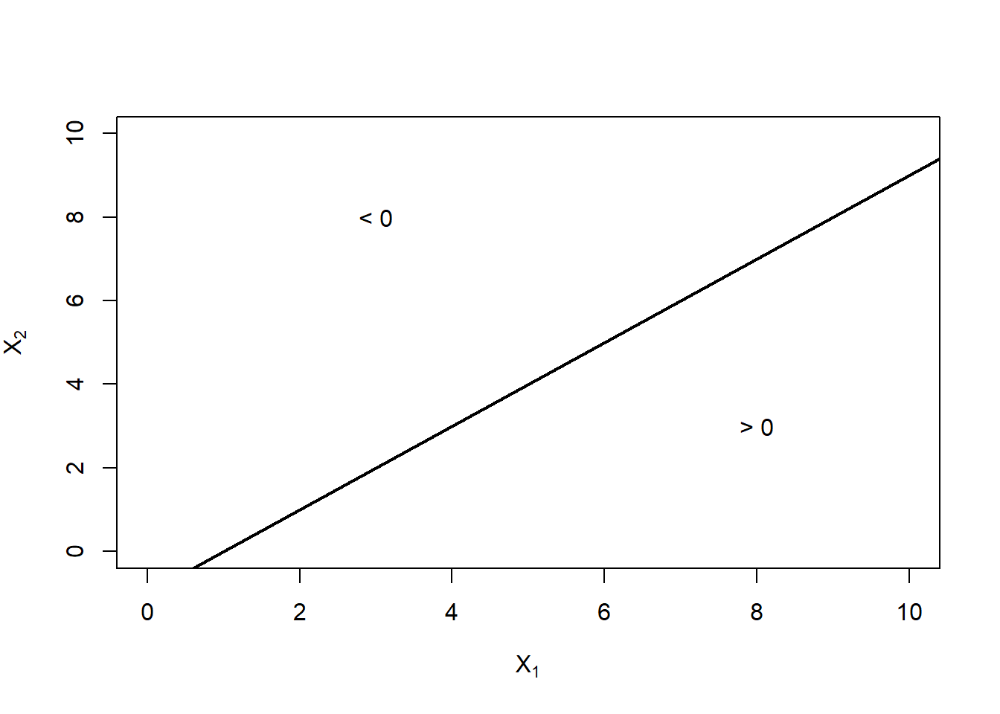
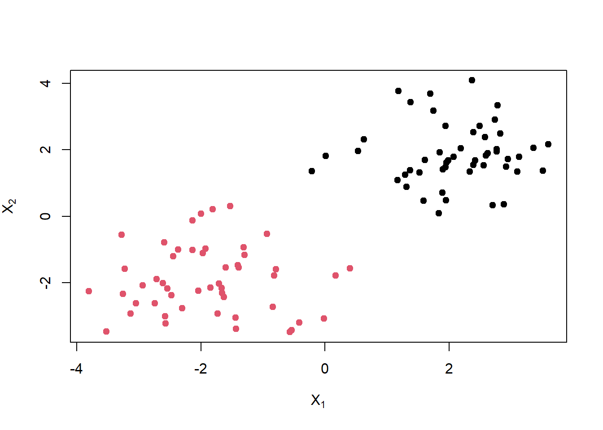
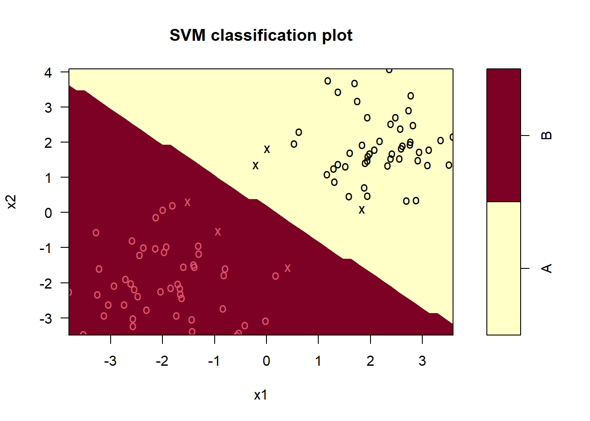
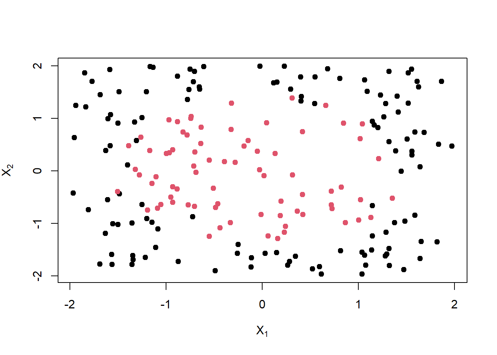
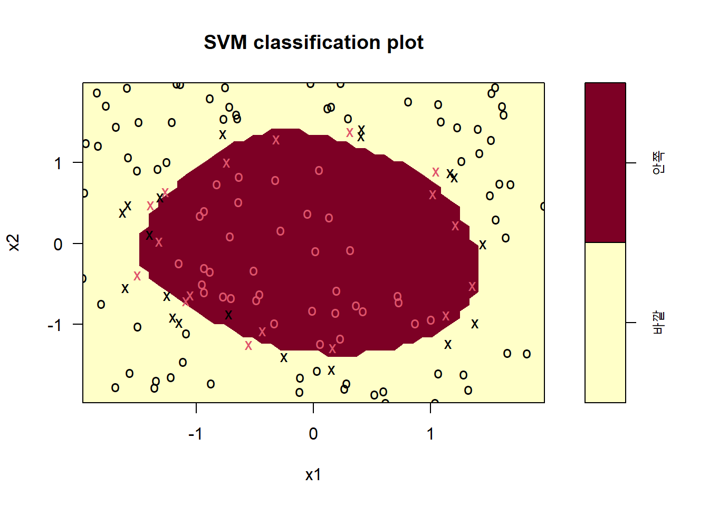
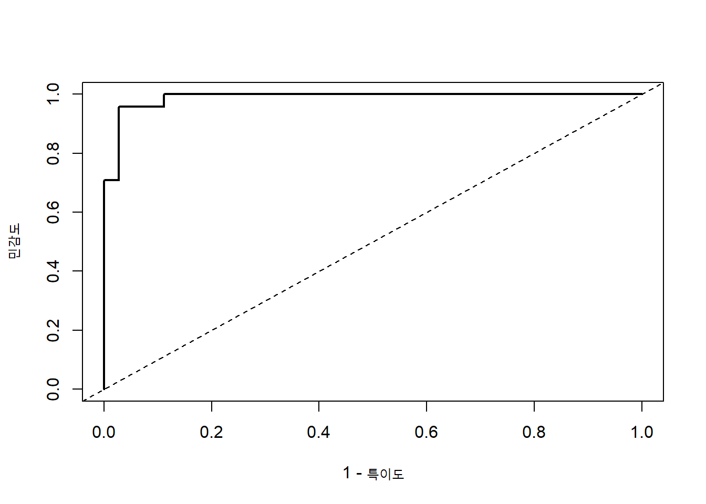

plot(1:10, 1:10, type = "n", xlab = expression(X[1]), ylab = expression(X[2]),
xlim = c(0, 10), ylim = c(0, 10))
abline(a = -1, b = 1, lwd = 2)
text(8, 3, "> 0")
text(3, 8, "< 0")
서포트 벡터 머신(support vector machine, SVM)은 두 범주를 구분하는 경계를 찾는 강력한 분류방법이다. 선형적으로 완전히 분리되는 자료에서는 최대 마진 분류기(maximal margin classifier)를 사용하고, 분리가 완전하지 않을 때는 서포트 벡터 분류기(support vector classifier)를 사용한다. 커널(kernel)을 도입하면 비선형 결정경계로 확장할 수 있다.
\(p\)차원 공간에서 초평면(hyperplane)은
\[ \beta_0+\beta_1X_1+\cdots+\beta_pX_p=0 \]
으로 정의된다. \(p=2\)이면 직선, \(p=3\)이면 평면이다. 초평면은 공간을
\[ \beta_0+\beta_1X_1+\cdots+\beta_pX_p>0 \]
인 영역과 그 값이 0보다 작은 영역으로 나눈다.
plot(1:10, 1:10, type = "n", xlab = expression(X[1]), ylab = expression(X[2]),
xlim = c(0, 10), ylim = c(0, 10))
abline(a = -1, b = 1, lwd = 2)
text(8, 3, "> 0")
text(3, 8, "< 0")
훈련관측치 \((x_i,y_i)\)에서 \(y_i\in\{-1,1\}\)이라고 하자. 두 범주가 선형적으로 완전히 분리된다면 다음 조건을 만족하는 초평면이 존재한다.
\[ y_i(\beta_0+\beta_1x_{i1}+\cdots+\beta_px_{ip})>0, \qquad i=1,\ldots,n \]
그러나 분리 초평면은 보통 여러 개 존재한다. 새로운 관측치에 더 안정적으로 일반화하려면 두 범주에서 가장 가까운 관측치까지의 거리를 최대화하는 경계를 선택한다.
최대 마진 분류기는 다음 최적화 문제를 푼다.
\[ \max_{\beta_0,\beta_1,\ldots,\beta_p,M} M \]
제약조건은
\[ \sum_{j=1}^{p}\beta_j^2=1 \]
과
\[ y_i\left(\beta_0+\sum_{j=1}^{p}\beta_jx_{ij}\right)\ge M, \qquad i=1,\ldots,n \]
이다. \(M\)은 초평면에서 가장 가까운 훈련관측치까지의 거리, 즉 마진이다.
경계에 가장 가깝고 마진을 결정하는 관측치를 서포트 벡터(support vector)라고 한다. 경계에서 멀리 떨어진 관측치를 조금 움직여도 결정경계는 변하지 않지만 서포트 벡터를 움직이면 경계가 달라질 수 있다.
현실의 자료는 두 범주가 겹치거나 이상치를 포함하므로 완전히 분리되지 않는 경우가 많다. 완전 분리가 가능하더라도 하나의 이상치 때문에 마진이 지나치게 좁아질 수 있다.
서포트 벡터 분류기는 일부 관측치가 마진 안에 들어오거나 잘못 분류되는 것을 허용한다. 여유변수 \(\epsilon_i\ge0\)를 도입하면
\[ y_i\left(\beta_0+\sum_{j=1}^{p}\beta_jx_{ij}\right) \ge M(1-\epsilon_i) \]
이고
\[ \sum_{i=1}^{n}\epsilon_i\le C \]
와 같은 제약을 둔다. 소프트웨어에서는 보통 비용모수 cost를 사용한다.
cost가 크면 오분류에 큰 벌점을 주어 좁고 복잡한 마진을 만든다.cost가 작으면 더 많은 위반을 허용하여 넓고 규제가 강한 마진을 만든다.따라서 cost는 편향-분산 절충을 조절하며 교차검증으로 선택한다.
set.seed(1)
x <- matrix(rnorm(200), ncol = 2)
x[1:50, ] <- x[1:50, ] + 2
x[51:100, ] <- x[51:100, ] - 2
y <- factor(c(rep("A", 50), rep("B", 50)))
svm_data <- data.frame(x1 = x[, 1], x2 = x[, 2], y = y)
plot(x, col = as.integer(y), pch = 19,
xlab = expression(X[1]), ylab = expression(X[2]))
library(e1071)
fit_svm_linear <- svm(
y ~ x1 + x2,
data = svm_data,
kernel = "linear",
cost = 1,
scale = TRUE
)
summary(fit_svm_linear)#>
#> Call:
#> svm(formula = y ~ x1 + x2, data = svm_data, kernel = "linear", cost = 1,
#> scale = TRUE)
#>
#>
#> Parameters:
#> SVM-Type: C-classification
#> SVM-Kernel: linear
#> cost: 1
#>
#> Number of Support Vectors: 6
#>
#> ( 3 3 )
#>
#>
#> Number of Classes: 2
#>
#> Levels:
#> A Bplot(fit_svm_linear, svm_data, x2 ~ x1)
svm()이 보고하는 index는 서포트 벡터가 된 훈련관측치의 위치이다.
fit_svm_linear$index#> [1] 14 24 41 61 71 87length(fit_svm_linear$index)#> [1] 6비용모수를 바꾸면 서포트 벡터 수와 경계가 달라진다.
cost_grid <- c(0.01, 0.1, 1, 10, 100)
sv_count <- sapply(cost_grid, function(cost_value) {
fit <- svm(
y ~ x1 + x2,
data = svm_data,
kernel = "linear",
cost = cost_value,
scale = TRUE
)
length(fit$index)
})
data.frame(cost = cost_grid, 서포트벡터수 = sv_count)set.seed(2)
tune_linear <- tune(
svm,
y ~ x1 + x2,
data = svm_data,
kernel = "linear",
ranges = list(cost = 10^seq(-3, 2, by = 1)),
tunecontrol = tune.control(cross = 10)
)
tune_linear#>
#> Parameter tuning of 'svm':
#>
#> - sampling method: 10-fold cross validation
#>
#> - best parameters:
#> cost
#> 0.01
#>
#> - best performance: 0범주 사이의 관계가 원형, 곡선형, 또는 복잡한 상호작용으로 결정된다면 선형 초평면은 적절하지 않다. 설명변수를 \(X_1^2\), \(X_2^2\), \(X_1X_2\) 같은 고차원 특성으로 확장하면 선형분류기를 비선형 경계로 바꿀 수 있다.
예를 들어 원래 공간에서
\[ \beta_0+\beta_1X_1+\beta_2X_1^2+\beta_3X_2=0 \]
은 곡선이지만, \((X_1,X_1^2,X_2)\) 공간에서는 선형 초평면이다. 그러나 가능한 특성을 직접 생성하면 차원이 빠르게 증가한다.
서포트 벡터 분류기의 해는 관측치 사이의 내적
\[ \langle x_i,x_{i'}\rangle=\sum_{j=1}^{p}x_{ij}x_{i'j} \]
에 의존한다. 커널 함수는 이 내적을 더 유연한 유사도 측정값으로 바꾼다.
\[ K(x_i,x_{i'}) \]
커널 트릭(kernel trick)을 이용하면 고차원 특성을 명시적으로 계산하지 않고도 그 공간에서 선형분류기를 적합할 수 있다.
\(d\)차 다항 커널은
\[ K(x_i,x_{i'})=(1+\gamma\langle x_i,x_{i'}\rangle)^d \]
형태이다. \(d=1\)이면 선형커널과 유사하고, \(d\)가 커질수록 더 복잡한 상호작용과 곡률을 허용한다.
방사형 기저 함수(radial basis function, RBF) 커널은
\[ K(x_i,x_{i'})=\exp\{-\gamma\|x_i-x_{i'}\|^2\} \]
이다. 가까운 관측치는 큰 유사도를 갖고 먼 관측치는 거의 영향을 주지 않는다.
cost와 gamma를 함께 조정해야 한다.
set.seed(3)
n <- 200
x1 <- runif(n, -2, 2)
x2 <- runif(n, -2, 2)
radius <- x1^2 + x2^2
class_nonlinear <- factor(ifelse(radius + rnorm(n, sd = 0.35) > 2, "바깥", "안쪽"))
nonlinear_data <- data.frame(x1, x2, class = class_nonlinear)
plot(x1, x2, col = as.integer(class_nonlinear), pch = 19,
xlab = expression(X[1]), ylab = expression(X[2]))
set.seed(4)
train_id <- sample(seq_len(n), size = floor(0.7 * n))
train_nonlinear <- nonlinear_data[train_id, ]
test_nonlinear <- nonlinear_data[-train_id, ]
fit_linear_nl <- svm(
class ~ x1 + x2,
data = train_nonlinear,
kernel = "linear",
cost = 1,
probability = TRUE
)
fit_radial_nl <- svm(
class ~ x1 + x2,
data = train_nonlinear,
kernel = "radial",
cost = 10,
gamma = 1,
probability = TRUE
)
pred_linear_nl <- predict(fit_linear_nl, test_nonlinear)
pred_radial_nl <- predict(fit_radial_nl, test_nonlinear)
c(
선형커널_정확도 = mean(pred_linear_nl == test_nonlinear$class),
RBF커널_정확도 = mean(pred_radial_nl == test_nonlinear$class)
)#> 선형커널_정확도 RBF커널_정확도
#> 0.60 0.95plot(fit_radial_nl, train_nonlinear, x2 ~ x1)
cost와 gamma 동시 선택set.seed(5)
tune_radial <- tune(
svm,
class ~ x1 + x2,
data = train_nonlinear,
kernel = "radial",
ranges = list(
cost = c(0.1, 1, 10, 100),
gamma = c(0.1, 0.5, 1, 2)
),
tunecontrol = tune.control(cross = 5)
)
tune_radial#>
#> Parameter tuning of 'svm':
#>
#> - sampling method: 5-fold cross validation
#>
#> - best parameters:
#> cost gamma
#> 100 0.1
#>
#> - best performance: 0.05714286best_radial <- tune_radial$best.model
pred_best_radial <- predict(best_radial, newdata = test_nonlinear)
table(실제 = test_nonlinear$class, 예측 = pred_best_radial)#> 예측
#> 실제 바깥 안쪽
#> 바깥 35 1
#> 안쪽 2 22mean(pred_best_radial == test_nonlinear$class)#> [1] 0.95교차검증으로 조정모수를 고른 뒤 같은 교차검증 결과를 최종 성능으로 보고하면 낙관적일 수 있다. 엄밀한 성능평가가 필요하면 외부 시험자료나 중첩 교차검증을 사용한다.
SVM은 기본적으로 분류 경계까지의 부호 있는 거리와 관련된 결정값(decision value)을 제공한다. 결정값은 확률이 아니지만 임계값을 바꾸어 민감도와 특이도의 관계를 평가할 수 있다.
다음 함수는 이항 분류에서 ROC 좌표와 AUC를 계산한다.
roc_from_scores <- function(actual, score, positive) {
actual_positive <- actual == positive
threshold <- sort(unique(score), decreasing = TRUE)
threshold <- c(Inf, threshold, -Inf)
tpr <- fpr <- numeric(length(threshold))
for (i in seq_along(threshold)) {
pred_positive <- score >= threshold[i]
tpr[i] <- sum(pred_positive & actual_positive) / sum(actual_positive)
fpr[i] <- sum(pred_positive & !actual_positive) / sum(!actual_positive)
}
ord <- order(fpr, tpr)
fpr <- fpr[ord]
tpr <- tpr[ord]
auc <- sum(diff(fpr) * (head(tpr, -1) + tail(tpr, -1)) / 2)
list(fpr = fpr, tpr = tpr, auc = auc)
}pred_decision <- predict(
best_radial,
newdata = test_nonlinear,
decision.values = TRUE
)
decision_score <- as.numeric(attr(pred_decision, "decision.values"))
# 결정값의 방향을 양성 범주에 맞춘다.
positive_class <- levels(test_nonlinear$class)[2]
if (mean(decision_score[test_nonlinear$class == positive_class]) <
mean(decision_score[test_nonlinear$class != positive_class])) {
decision_score <- -decision_score
}
roc_svm <- roc_from_scores(test_nonlinear$class, decision_score, positive_class)
plot(roc_svm$fpr, roc_svm$tpr, type = "l", lwd = 2,
xlab = "1 - 특이도", ylab = "민감도",
xlim = c(0, 1), ylim = c(0, 1))
abline(0, 1, lty = 2)
roc_svm$auc#> [1] 0.9884259분류확률이 필요하면 probability=TRUE를 지정하고 확률 보정값을 얻을 수 있다. 다만 작은 표본에서는 확률 보정 자체의 불확실성이 크므로 별도의 검증이 필요하다.
SVM은 본래 이항분류기이다. 다범주 문제는 보통 다음 전략으로 확장한다.
e1071::svm()은 다범주 자료에서 내부적으로 일대일 전략을 사용한다.
set.seed(6)
iris_id <- sample(seq_len(nrow(iris)), size = 100)
train_iris <- iris[iris_id, ]
test_iris <- iris[-iris_id, ]
fit_svm_iris <- svm(
Species ~ .,
data = train_iris,
kernel = "radial",
cost = 10,
gamma = 0.5
)
pred_svm_iris <- predict(fit_svm_iris, test_iris)
table(실제 = test_iris$Species, 예측 = pred_svm_iris)#> 예측
#> 실제 setosa versicolor virginica
#> setosa 13 0 0
#> versicolor 0 15 2
#> virginica 0 2 18mean(pred_svm_iris == test_iris$Species)#> [1] 0.92두 방법 모두 선형 경계를 만들 수 있지만 최적화 기준과 출력이 다르다.
두 범주가 대체로 선형적으로 분리되고 확률 해석이 중요하면 로지스틱 회귀가 좋은 출발점이다. 경계가 복잡하고 예측 정확도가 우선이면 커널 SVM을 고려할 수 있다.
fit_logit_nl <- glm(
I(class == levels(class)[2]) ~ x1 + x2 + I(x1^2) + I(x2^2),
data = train_nonlinear,
family = binomial
)
prob_logit_nl <- predict(fit_logit_nl, newdata = test_nonlinear, type = "response")
pred_logit_nl <- factor(
ifelse(prob_logit_nl > 0.5,
levels(test_nonlinear$class)[2],
levels(test_nonlinear$class)[1]),
levels = levels(test_nonlinear$class)
)
c(
다항_로지스틱_정확도 = mean(pred_logit_nl == test_nonlinear$class),
RBF_SVM_정확도 = mean(pred_best_radial == test_nonlinear$class)
)#> 다항_로지스틱_정확도 RBF_SVM_정확도
#> 0.9166667 0.9500000cost는 오분류와 마진 폭 사이의 절충을 조절한다.gamma와 cost는 함께 교차검증해야 한다.